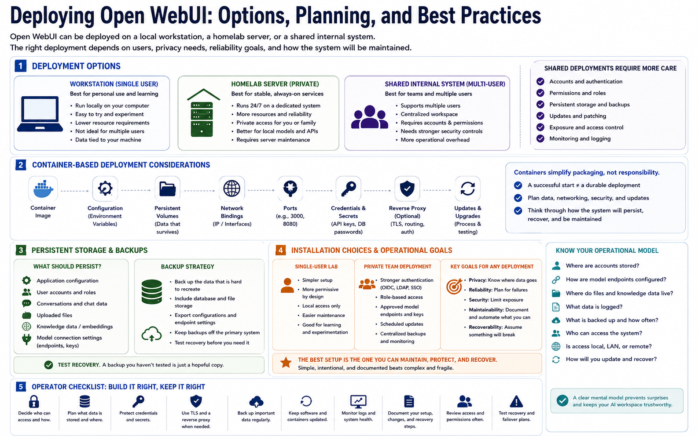

Installation and Deployment Patterns
Connecting to LMS... Progress: in progress

Narration
Open WebUI can be deployed on a local workstation, a homelab server, or a shared internal system. A workstation deployment is useful for personal experimentation and quick learning. A homelab server can provide a more stable always-on workspace for private AI services. A shared deployment can support multiple users, but it requires more attention to accounts, permissions, storage, backups, updates, and exposure control.
Container-based deployment is common at a high level because it helps package the application and its dependencies. Containers do not remove the need for planning. Persistent volumes, environment variables, network bindings, ports, credentials, reverse proxies, and update processes still need deliberate choices. A container that starts successfully is not automatically a durable or secure deployment.
Persistent storage should be planned from the beginning. Decide what needs to survive restarts and upgrades: application configuration, user records, conversations, uploaded files, knowledge data, and model connection settings. Backups should focus on the data that is hard to recreate. If the deployment supports important workflows, test recovery before you need it.
Installation choices should match privacy, reliability, and maintenance goals. A single-user lab can be simpler and more permissive than a multi-user environment. A private team deployment may need stronger authentication, documented endpoint approval, and scheduled updates. The best setup is not the fanciest one. It is the one that operators can maintain, protect, and recover.